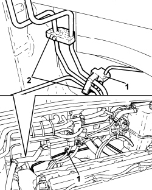
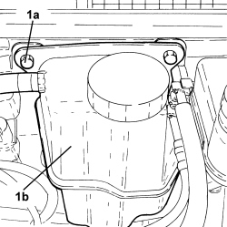
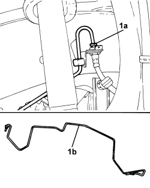

3340B56 RIGID PIPE FROM HYDRAULIC CONTROL UNIT TO RIGHT FRONT BRAKE - R.R.
- Path
- Procedures > 33 BRAKES > 3340 ANTI-LOCK BRAKING SYSTEM (ABS) > 3340B ABS SYSTEM PIPES > 3340B56 RIGID PIPE FROM HYDRAULIC CONTROL UNIT TO RIGHT FRONT BRAKE - R.R.
- Kind
- repair procedure (removal / refitting; the operation number is the code)
- Applies to
- engines: 2.2 JTS, 2.4 JTD 20v; all production periods
- Interactive page
- https://sloeber94.github.io/elrnDB-aBrrSpdr/en/#/946002151
Applies to: engines: 2.2 JTS, 2.4 JTD 20v; all production periods
 Removing
Removing
 Refitting
RefittingOp. 3340A12 ABS HYDRAULIC AND ELECTRONIC CONTROL UNIT - R.R.
- Position the vehicle on a lift.
1. Open the clips retaining the rigid pipe from the hydraulic control unit to the right front brake.
2. Open the clips retaining the fuel pipe and the fuel vapour pipe.

Applies to: engines: 2.2 JTS, 2.4 JTD 20v; all production periods
1. Undo the bolts (1a) and move the power assisted steering fluid reservoir (1b) aside complete with pipes.

Applies to: engines: 2.2 JTS, 2.4 JTD 20v; all production periods
1. Undo the connector (1a) and remove the rigid pipe from the hydraulic control unit to the right front brake (1b).

Applies to: engines: 2.2 JTS, 2.4 JTD 20v; all production periods
Refitting
Removing- Position the rigid pipe from the hydraulic controlunit to the right front brake and connect it to the right front brake caliper flexible pipe tightening the connector to the recommended torque.
Component | Fastening | dia | Value (daNm) | Validity |
|---|---|---|---|---|
Brake pipe connectors | Connector | M10/M12 | 1.4 ÷ 1.8 |
- Connect the rigid pipe from the hydraulic control unit to the right front brake to the retaining clips.
- Fit the engine coolant reservoir in place and secure it using the bolts.
- Remove the vehicle from the lift.
Op. 3340A12 ABS HYDRAULIC AND ELECTRONIC CONTROL UNIT - R.R.